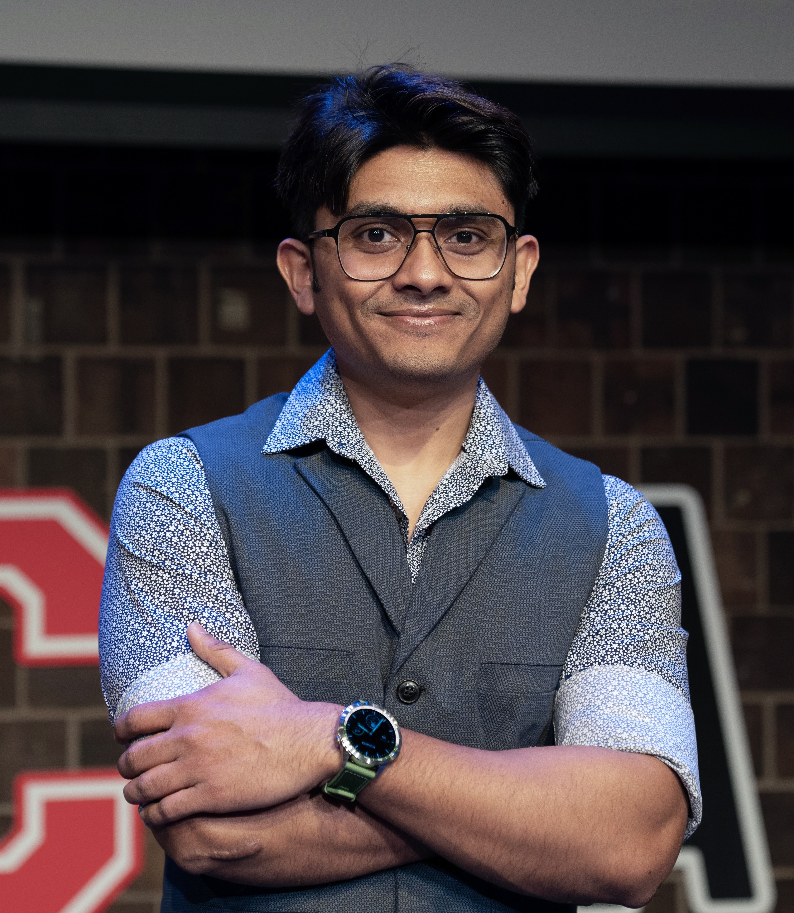

My research focuses on human-like virtual agents driven by large language models (LLMs), and their impact on human communication and training.
Currently building SOPHIE, a new paradigm for learning difficult conversations with the help of AI.
Research Experience: Anthropomorphism in LLMs, Agentic Workflow, Virtual Avatars, Human-AI Interactions, Synthetic Data for Computer Vision, AI for Education, ML for Code, ML for Healthcare
Masum Hasan 🔊
m.hasan 🐝 rochester.edu
PhD Candidate, Computer Science
5th year
Supervised by, Prof. Ehsan HoqueUniversity of Rochester
NY, US
 ORCID
ORCIDHighlights
- [April 21, 2024] Public speaking, "Rethinking Capitalism in the Age of AGI" at ROC Talks Annual Event (Spring '24)! Video
- [Feb 15, 2024] Speaking about Future of Interactive Education with Generative AI at New York Academy of Sciences
- [Feb 21, 2024] Privacy, Security, Ethics of Generative AI, University of Rochester
- [Fall, 2023] My talk about our research got featured on University of Rochester news events.
- [Fall, 2023] I am talking about how generative AI is going to affect human connections on WXXI News radio show Connections with Evan Dawson. Link to the episode.
- [Fall, 2023] Our work on virtual human based online education got featured in local TV News10NBC.
- [Fall, 2023] I am speaking about our research on LLM-driven virtual humans at Flower City AI conference in Rochester. Link to the talk.
- [Fall, 2023] Conducting a 4 part workshop series on Generative AI with Ain Center of Entrepreneurship, University of Rochester
- [Fall, 2023] Serving as a judge for Creative Collision Challenge, University of Rochester
- [Spring, 2023] Our team got featured in UofR News Center!
- [Spring, 2023] Conducting a workshop "Introduction to ChatGPT" with Ain Center of Entrepreneurship, University of Rochester
- [Spring, 2022] Serving as a reviewer for Late Breaking Work workshop at CHI 2022.
- [June 02, 2021] Text2App got featured in TechXplore. Text2App: A framework that creates Android apps from text descriptions
Publications
Published- Hi5🤚: Synthetic Data for Inclusive, Robust, Hand Pose Estimation Masum Hasan, Cengiz Ozel, Nina Long, Alexander Martin, Samuel Potter, Tariq Adnan, Sangwu Lee, Amir Zadeh, Ehsan Hoque
Venue: ACII 2025 - 'Poker with Play Money': Exploring Psychotherapist Training with Virtual Patients Cynthia M. Baseman Masum Hasan, Nathaniel Swinger, Sheila A. M. Rauch, Ehsan Hoque, Rosa I. Arriaga
Venue: CSCW 2025 - SAPIEN: Affective Virtual Agents Powered by Large Language Models Masum Hasan, Cengiz Ozel, Sammy Potter, Ehsan Hoque
Venue: ACIIW 2023 [arxiv] - CoDesc: A Large Code–Description Parallel Dataset. Masum Hasan, Tanveer Muttaqeen, Ishtiaq Niloy, Kazi Mehrab, Tahmid Hasan, Mahim Pantho, Wasi Uddin Ahmad, Rifat Shahriyar, Anindya Iqbal
Venue: ACL Findings 2021 - Auto-Gait: Automatic Ataxia Risk Assessment with Computer Vision on Gait Task Videos. Wasifur Rahman, Masum Hasan, Md Saiful Islam, Titilayo Olubajo, Jeet Thaker, Abdelrahman Abdelkader, Phillip Yang, Tetsuo Ashizawa, Ehsan Hoque.
Venue: IMWUT, UbiComp 2023 - LowResource at BLP-2023 Task 2: Leveraging BanglaBert for Low Resource Sentiment Analysis of Bangla Language Aunabil Chakma, Masum Hasan
Venue: EMNLP 2023, BLP Workshop - A User-Centered Framework to Empower People with Parkinson's Disease Wasifur Rahman, Abdelrahman Abdelkader, Sangwu Lee, Phillip Yang, Md Saiful Islam, Tariq Adnan, Masum Hasan, Ellen Wagner, Sooyong Park, E. Ray Dorsey, Catherine Schwartz, Karen Jaffe, Ehsan Hoque.
Venue: IMWUT, UbiComp 2024 - Using a Balanced Scorecard to Identify Opportunities to Improve Code Review Effectiveness: An Industrial Experience Report. Masum Hasan, Anindya Iqbal, Amiangshu Bosu, Mohammad Rafid Ul Islam, A.J.M. Imtiajur Rahman.
Venue: EMSE (Journal), Impact Factor: 8.41 - Review4Repair: Code Review Aided Automatic Program Repairing. Faria Huq, Masum Hasan, Mahim Pantho, Sazan Mahbub, Anindya Iqbal, Toufique Ahmed.
Venue: IST (Journal), Impact Factor: 6.93 - Hitting your MARQ: Multimodal ARgument Quality Assessment. Md Kamrul Hasan, James Spann, Masum Hasan Md. Saiful Islam, Kurtis Haut, Rada Mihalcea and Ehsan Hoque.
Venue: EMNLP 2021 - Not Low-Resource Anymore: Aligner Ensembling, Batch Filtering, and New Datasets for Bengali-English Machine Translation.Tahmid Hasan, Abhik Bhattacharjee, Kazi Samin, Masum Hasan, Madhusudan Basak, M. Sohel Rahman, Rifat Shahriyar.
Venue: EMNLP 2020 - Text2App: A Framework for Creating Android Apps from Text Descriptions. Masum Hasan, Kazi Sajeed Mehrab, Wasi Uddin Ahmad, Rifat Shahriyar.
Venue: NLP4Prog Workshop, ACL-IJCNLP 2021 (non-archival) - Recognition of Bengali Handwritten Digits Using Convolutional Neural Network Architectures. Md Mahmudul Hasan, Md Rafid Ul Islam, Md Tareq Mahmood.
Venue: ICBSLP 2018 - Early Detection of Earthquake Using Satellite Based Quantum Computing.Akhter Al Amin, Mahmudul Hasan, Kazi Sinthia Kabir, Tanzila Choudhury, ABM Alim Al Islam.
Venue: ICCSNT, 2015
- Improving Serious Illness Communication Skills with a Generative AI Virtual Patient: A Randomized Controlled Trial Kurtis Haut Masum Hasan, Thomas Carroll, Ronald Epstein, Taylan Sen, Ehsan Hoque
- BERT2Code: Can Pretrained Language Models be Leveraged for Code Search? Abdullah Al Ishtiaq, Masum Hasan, Md. Mahim Anjum Haque, Kazi Sajeed Mehrab, Tanveer Muttaqueen, Tahmid Hasan, Anindya Iqbal, Rifat Shahriyar